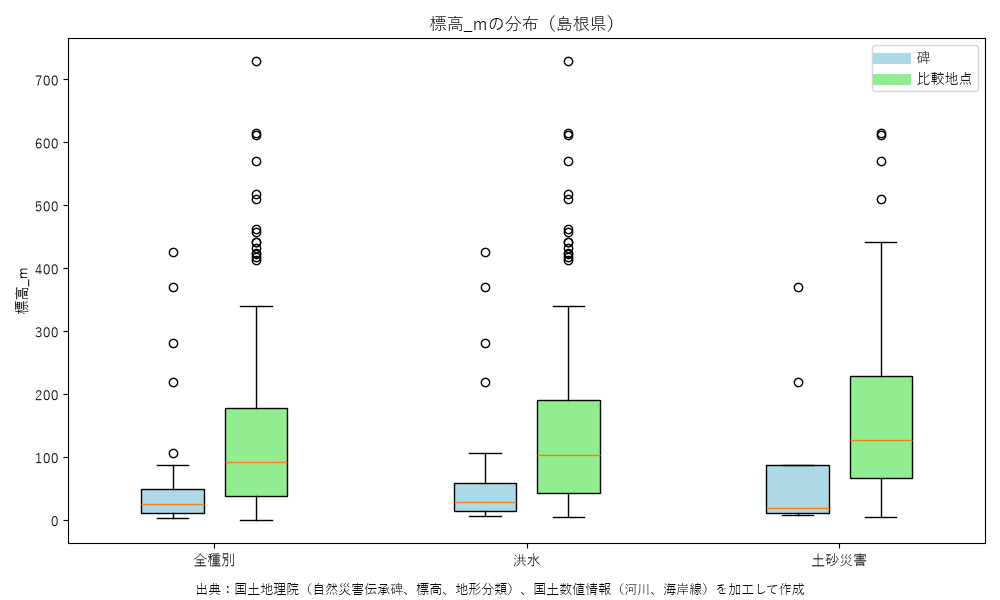
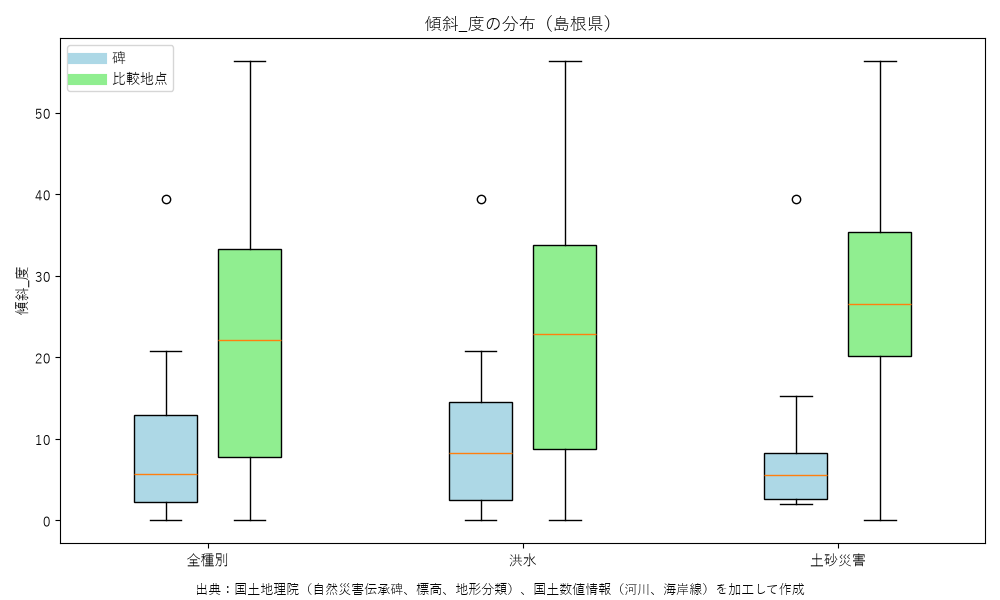
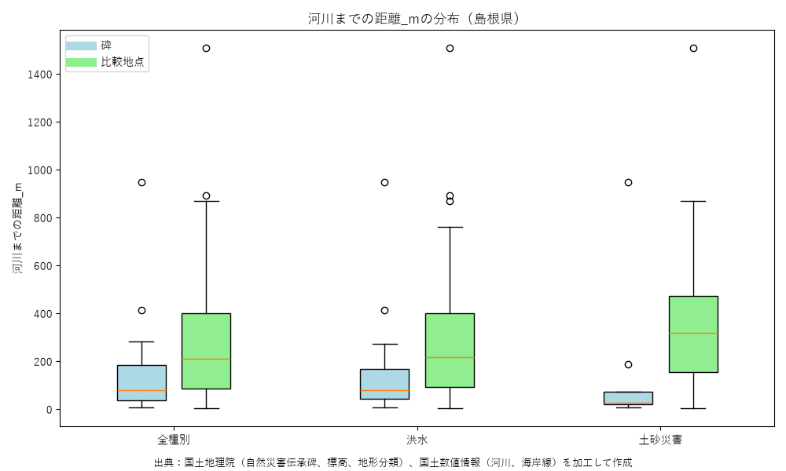
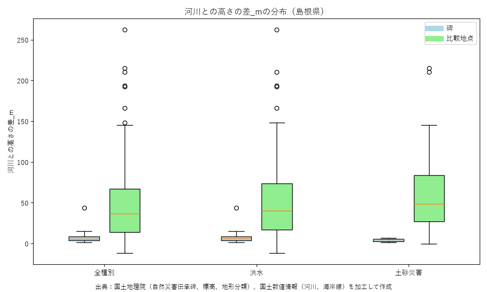
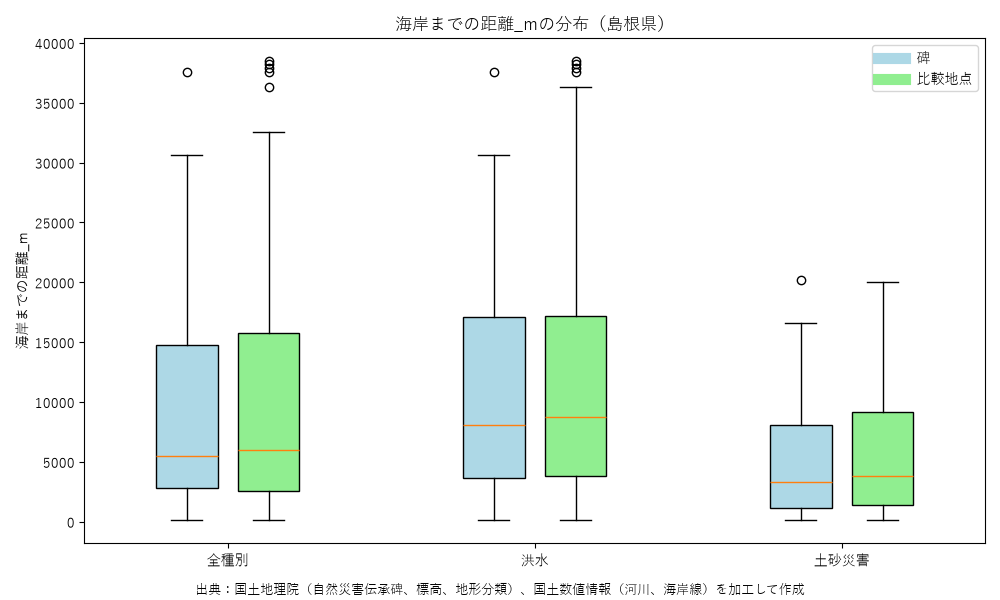
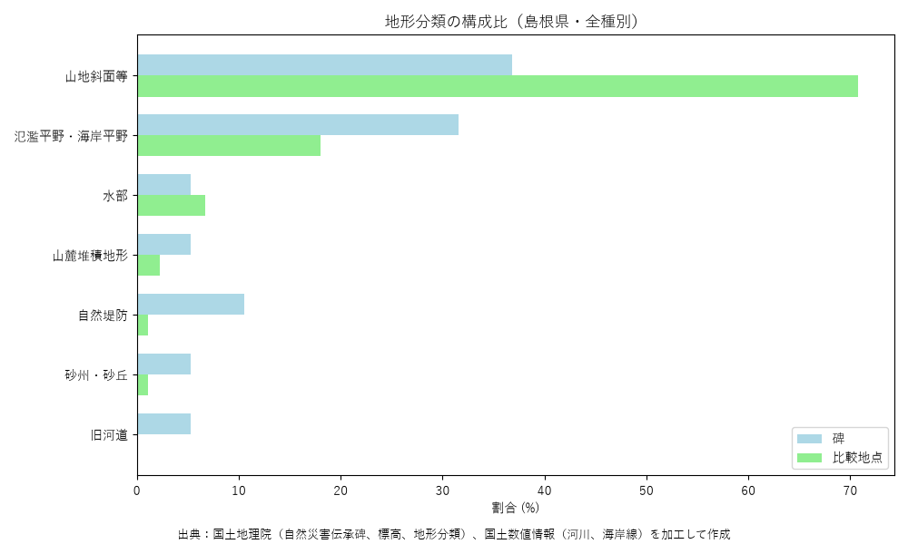
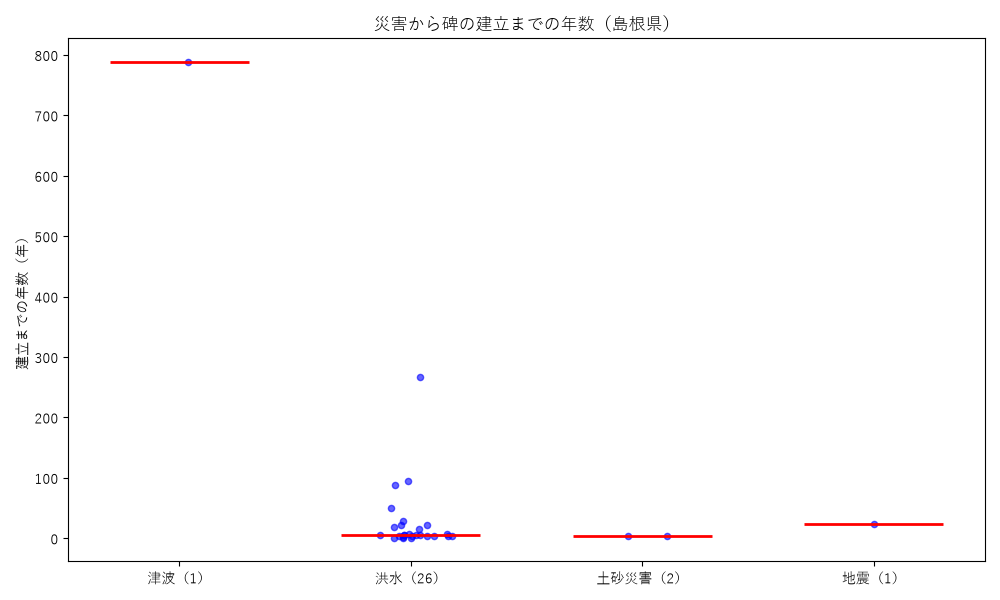
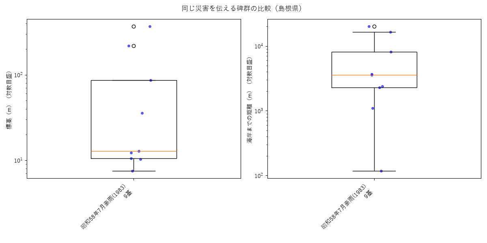

伝承碑データ取得日：2026-09-24 碑の数：31基 最終更新：2026-10-11
国土地理院の自然災害伝承碑に、碑ごとの地形（標高・傾斜・地形分類・河川や海岸との位置関係）を付け、碑のまわり（100m〜2,000m）の地点と比べた結果をまとめたものです。結果は地形との相関を示すもので、災害の予測・安全の保証ではありません。
| 指標 | 碑の中央値 | まわりの中央値 | 差の中央値 | 碑の方が大きい割合 |
|---|---|---|---|---|
| 標高(m) | 24.7 | 92.2 | -54.9 | 6% |
| 傾斜(度) | 5.7 | 22.1 | -14.8 | 19% |
| 河川までの距離(m) | 77.0 | 210.0 | -68.0 | 29% |
| 河川との高さの差(m) | 5.7 | 36.7 | -29.4 | 17% |
| 海岸までの距離(m) | 5460.0 | 6021.0 | -332.0 | 42% |
移転碑を除いた集計や災害種別ごとの集計は、下の集計表（CSV）にあります。






災害名に書かれた発生年と碑の建立年から、災害の何年後に碑が建てられたかを数えました。複数の災害を伝える碑は最も古い災害から数えています。建立年が不明な碑は数に入れていません。
| 主な種別 | 碑の数 | 年数を出せた碑（＝差あり） | 中央値（年） | 最小〜最大（年） |
|---|---|---|---|---|
| 全種別 | 31 | 30 | 6.0 | 1〜788 |
| 津波 | 1 | 1 | 788.0 | 788〜788 |
| 洪水 | 27 | 26 | 6.0 | 1〜267 |
| 土砂災害 | 2 | 2 | 3.5 | 3〜4 |
| 地震 | 1 | 1 | 24.0 | 24〜24 |

| 災害（発生年） | 碑の数 | 標高の中央値（m） | 海岸までの距離の中央値（m） |
|---|---|---|---|
| 昭和58年7月豪雨(1983) | 9 | 12.8 | 3567.0 |
| 昭和47年7月豪雨(1972) | 3 | 36.2 | 17873.0 |

碑と、碑のまわり（100m〜2,000m）の地点が、ハザードマップの想定区域（洪水・津波・高潮・土砂災害）に入っているかを数えました。想定区域との重なりを示すもので、危険度の判定ではありません。地図では右上の切り替えで想定区域を重ねて見られます。
| ハザード | 碑：区域内 | まわり：区域内 | 碑：浸水深3m以上 | まわり：浸水深3m以上 |
|---|---|---|---|---|
| 洪水（想定最大規模） | 39%（12／31基） | 8%（12／155点） | 19%（6／31基） | 7%（11／155点） |
| 津波 | 0%（0／31基） | 0%（0／155点） | 0%（0／31基） | 0%（0／155点） |
| 高潮 | 0%（0／31基） | 0%（0／155点） | 0%（0／31基） | 0%（0／155点） |
| 土砂災害 | 26%（8／31基） | 10%（15／155点） | — | — |
割合は判定できた碑・地点の数に対するものです。移転碑を除いた集計や災害種別ごとの集計は、下の集計表（CSV）にあります。
ハザード情報取得日：2026-10-11
| 更新日 | データ取得日 | 碑の数 | 追加 | 変更 | 削除 |
|---|---|---|---|---|---|
| 2026-10-11 | 2026-09-24 | 31 | 31 | 0 | 0 |